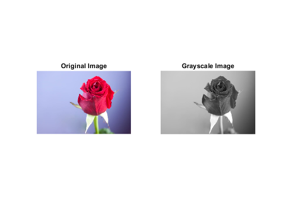

clc;
close all;
clear all;
img = imread('flower.jpg');
figure;
subplot(2,4,1);
imshow(img);
title('Original Image');
subplot(2,4,5);
imshow(img);
title('Original Image');
img_red = img(:,:,:);
img_green = img(:,:,:);
img_blue = img( :, : ,:);
img_red_gray = img(:,:,1);
img_red (:,:,2) = 0;
img_red (:,:,3) = 0;
subplot(2,4,2);
imshow(img_red);
title('Only Red');
img_green_gray = img_green(:,:,2);
subplot(2,4,6);
imshow(img_red_gray);
title('Red Gray');
img_green (:,:,1) = 0;
img_green (:,:,3) = 0;
subplot(2,4,3);
imshow(img_green);
title('Only Green');
subplot(2,4,7);
imshow(img_green_gray);
title('Green Gray');
img_blue_gray = img(:,:,3);
img_blue (:,:,1) = 0;
img_blue (:,:,2) = 0;
subplot(2,4,4);
imshow(img_blue);
title('Only Blue');
subplot(2,4,8);
imshow(img_blue_gray);
title('Blue Gray');
grayImg = rgb2gray(img);
figure;
subplot(1, 2, 1);
imshow(img);
title('Original Image');
subplot(1, 2, 2);
imshow(grayImg);
title('Grayscale Image');
